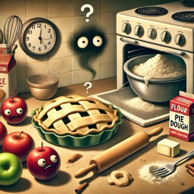

Apple Pie

Description
This is not my recipe for my favorite dessert, apple pie.
Ingredients
- 3 mildly confused apples (preferably ones that have witnessed a cooking show but aren't sure what their role is)
- 1 cup of mystery sugar (is it really sugar? Could be salt... you'll find out)
- 2 tablespoons of misplaced cinnamon (because where else would it be?)
- A dash of existential dread (because baking makes you question your life choices)
- 1 teaspoon of frustration (the amount will increase as you bake)
- A suspiciously clean fork (you’ll never use it, but it’s watching you)
- 2 cups of regret flour (for when you remember you're not good at baking)
- 1 stick of unsalted butter, still wrapped in its packaging (but don't worry, the wrapper adds texture)
- A pinch of confusion (optional, but recommended)
- 1 tablespoon of ambition (if only it were enough)
Steps
- Convince the apples they are the heroes of this pie and peel them while they contemplate their purpose in life.
- In a bowl, mix the mystery sugar, misplaced cinnamon, and existential dread until they form a suspiciously dark
cloud
over your kitchen.
- Remember you forgot to preheat the oven, so turn it to 300°F or whatever feels right at this moment.
- Take the unsalted butter, remove it from its wrapper with your mind (or hands, if you're still grounded in
reality), and
attempt to soften it by showing it pictures of tropical vacations.
- Mix the flour of regret with frustration and confusion. If the dough doesn't come together, yell at it. That
sometimes
works.
- Roll out the dough unevenly and place it in a pie dish with the grace of a toddler trying to draw a circle.
Apologize to
the dough for its misfortune.
- Carefully layer the mildly confused apples in the crust, wondering if they’ll ever forgive you for what’s about to
happen.
- Pour the sugar mixture over the apples, then sprinkle the ambition on top for good measure. It won't help, but at
least
you tried.
- Bake until you start smelling something that might be burning but you're too scared to check. This will take
approximately 45 minutes or until your smoke detector expresses concern.
- Let the pie cool while you ponder whether it was all worth it. Then serve with a side of self-doubt and maybe a
dollop
of ice cream to numb the pain.
Enjoy!
I am obligated to say that the ingredients, steps, and image were generated by ChatGPT.